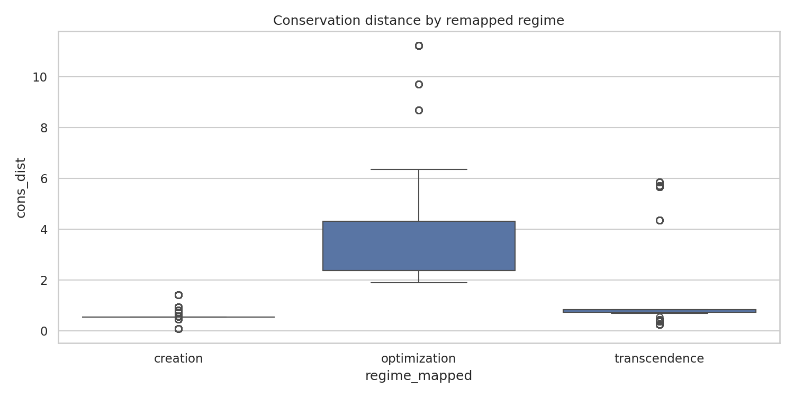
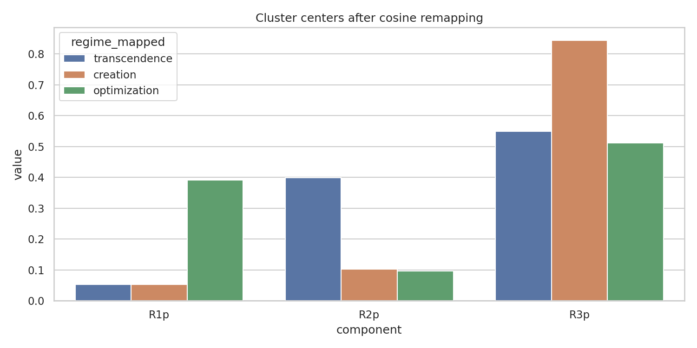
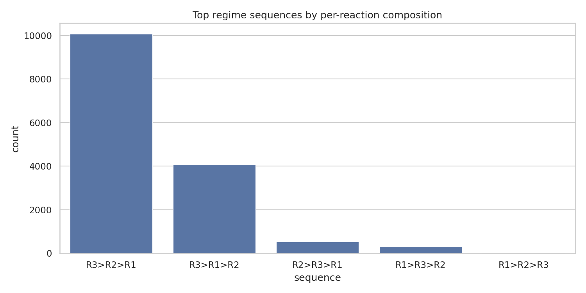

USPTO Three-Regime Remapping Report
Cluster to Regime Mapping (cosine)
| cluster |
assigned_regime |
| 0 |
transcendence |
| 1 |
creation |
| 2 |
optimization |
Cosine similarity matrix
| to_R1 |
to_R2 |
to_R3 |
cluster |
assigned_regime |
| 0.8338 |
0.3858 |
0.9213 |
0 |
transcendence |
| 0.9864 |
0.4307 |
0.8784 |
1 |
creation |
| 0.901 |
0.8541 |
0.953 |
2 |
optimization |
Conservation distance by remapped regime
| regime_mapped |
cons_dist |
| creation |
0.5533 |
| optimization |
3.4986 |
| transcendence |
1.3484 |
ANOVA on conservation distance: F = 7768.809030147277, p = 0.0

Cluster centers after remapping

Regime sequence test
Fraction of reactions with R1>R2>R3 ordering: 0.0003
| sequence |
count |
| R3>R2>R1 |
10066 |
| R3>R1>R2 |
4080 |
| R2>R3>R1 |
533 |
| R1>R3>R2 |
316 |
| R1>R2>R3 |
5 |

Generated by Julius at https://julius.ai